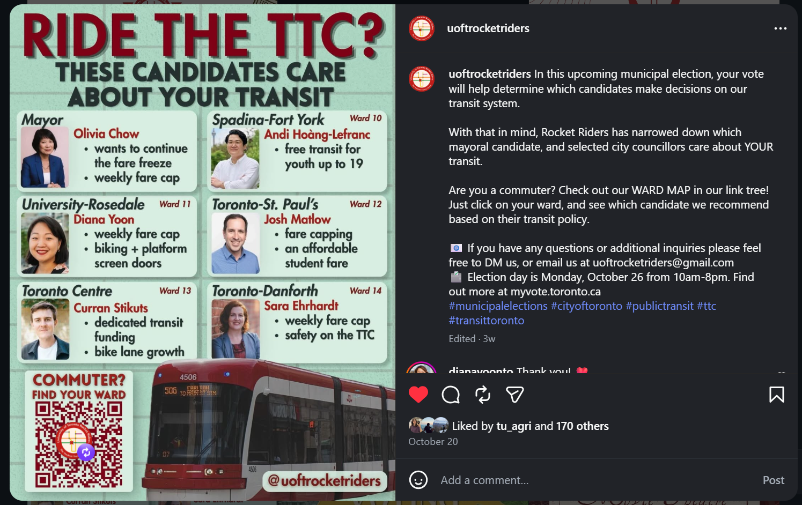
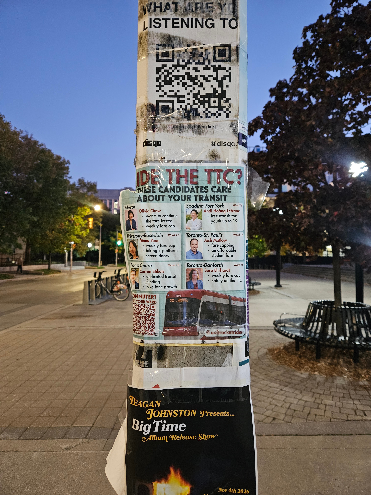
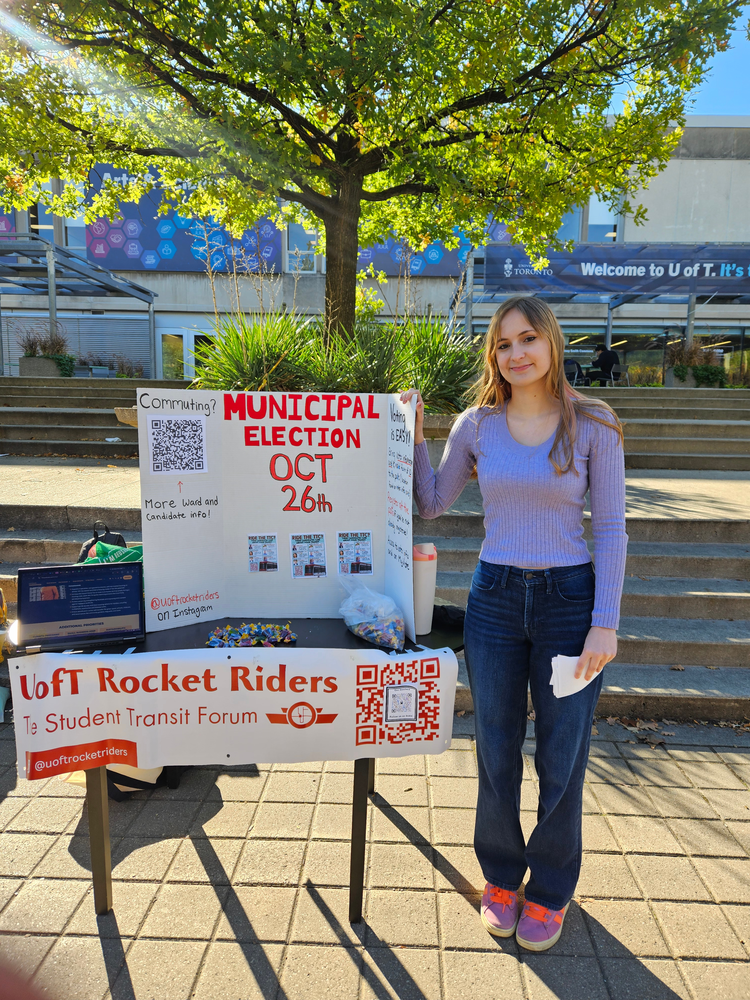
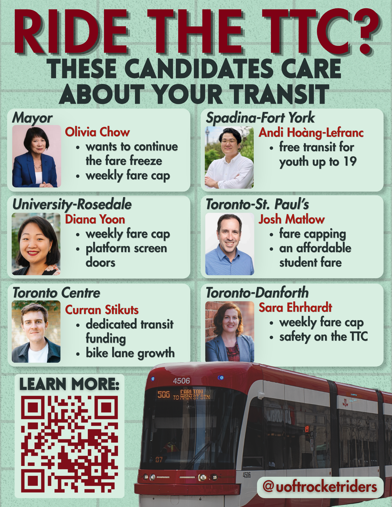

Municipal Election Poster

For the municipal election, I created a poster to promote pro-transit candidates after researching those with the most compelling policies on transit. I incorporated a background made to look like St. George Station, the “University of Toronto” station. This was for the club Rocket Riders, where I have the role of Advocacy Consultant. For the municipal election, we tabled outside a campus hotspot to advocate for pro-transit candidates, handing out copies of this poster. It was also posted on Instagram, receiving 100+ likes.


